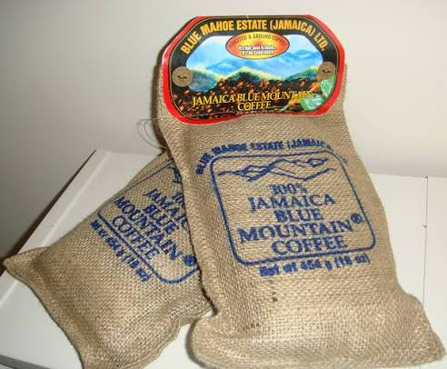

About Us
What Makes Us Different
- We brew using moka-inspired methods rooted in our original iron pot.
- We specialise in premium Blue Mountain coffee.
- Our café blends vintage industrial charm with warm, modern comfort.
- Every drink is handcrafted, roasted in our own personal roastery - nothing rushed, nothing mass‑produced.

Blue Mountain Beans
Rich, smooth, unforgettable.

Our Space
Industrial warmth with a modern touch.